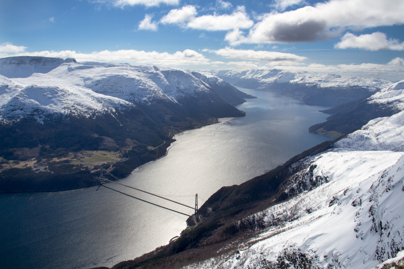
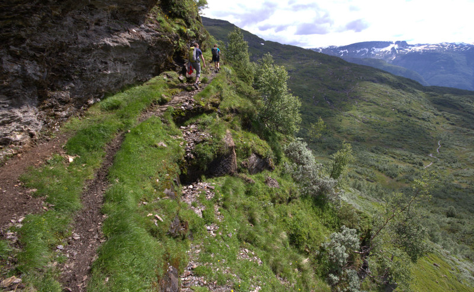
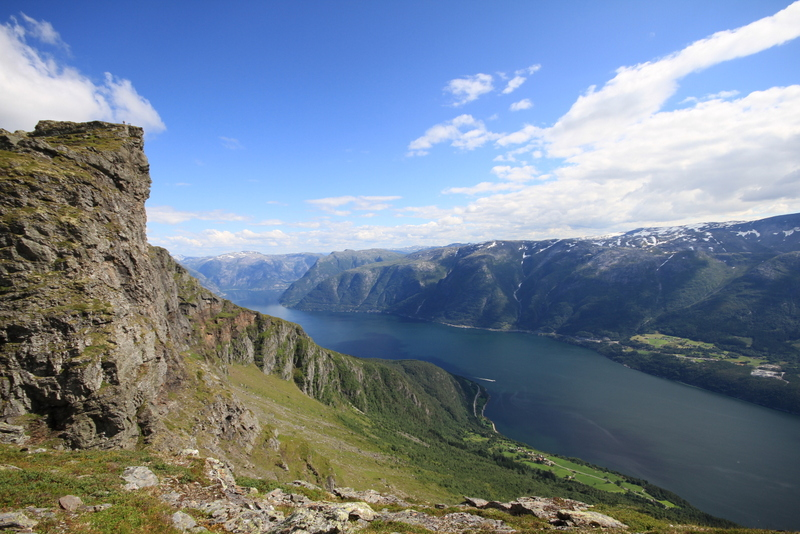
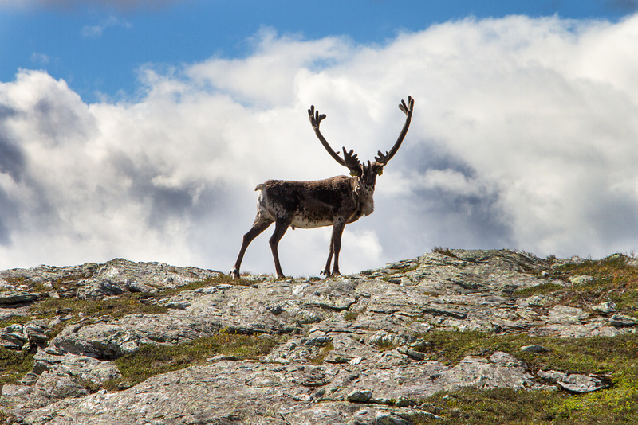

Midtfjell i Hardanger

Midtfjell, på 1255 moh., er ein av dei mange godbitane i Hardanger, med sin fantastiske utsikt mot mellom anna Eidfjorden og Sørfjorden. Fjellet ligg på nordsida av Eidfjorden, mellom Disk og Grimsnuten. Midtfjell tilhøyrer Ulvik kommune, men moglege ruter går og frå Granvin. Du ser Midtfjell veldig tydeleg frå Hardangerbrua, og følgeleg ser du brua veldig godt frå toppen.
Midtfjell er ein del av ryggen med Ingebjørgfjellet (Ingebjørgnuten) og Oksen. Å gå denne ryggen høver seg fint for dei som likar litt lengre turar.

Dersom du berre er interessert i å sjå bileter frå fjellet om området rundt kan du sjå følgande album:
- Midtfjell, sommaren 2013 (bla deg eit stykke ned)
- Midtfjell på vårski, våren 2014 (bla deg eit stykke ned)
Vegvalg og ruter
Det finst fleire flotte ruter til toppen. Her er ein kort gjennomgang av nokon av dei. Ta kontakt dersom du lurar på noko, eller ynskjer GPS-ruter til fleire enn dei du finn her.
Frå Stokksel, Granvin
Mi favorittrute, i alle fall på sommaren. Den er dog veldig fin å gå på vinteren og.
Last ned GPS-ruta i GPX-format.


Du må først kome deg til grombygda Granvin. I krysset med tunnelen mot Hardangerbrua og vidare mot Voss/Bergen tek du av og inn mot Granvin Gardsbutikk. Etter å ha kjøpt deg herleg proviant her køyrer du opp i retning Tveito, men tek av på ein flott skogsveg mot stølen Stokksel. Vegen kom seg betrakteleg etter at den blei utbetra i forbindelse med monstermaster. Her finn du ein stor parkeringsplass. Dette er og utgangspunktet for ein av dei finare fjellturane på vinterstid, nemleg Nonfjell, Ingebjørgnuten og Oksen. Ta då mot høgre. Held du derimot mot venstre går du innover langs elva på fin sti til det flatar noko ut, då tek du bratt til venstre mot Dosafjellet. På Dosafjellet kan du enten gå opp Olsskar, eller på ei hylle rundt. Her får du og det første blikket av fjord. Hald ryggen innover, du ser antydning til topp i det fjerne. Det går fleire renner/revner som kan by på bittelitt klyving, men desse klarar du fint å forsere.


Eit alternativ er å halde meir mot høgre, i retning Disk. Då får du tidlegare fjordutsikt, og får samtidig ein veldig fin utsikt mot sjølve Midtfjell. Dette er min favorittsti.
Når du kjem til toppen er det berre å skyve frå seg eventuell høgdeskrekk og nyte utsikta. Den er magisk, om du likar fjord og fjell.



Frå Haugseåsen, Vatnaset og Groheller, i Granvin
Denne ruta er litt lengre, men du får samtidig med deg mange flotte stader her og. Køyr først til Haugseåsen skianlegg, der det er rikeleg med parkeringsplass. Gå mot Vatnaset. Frå Vatnaset går du i retning Groheller. Gå ned i dalen (som fører deg ned til Fuglavatnet, noko du og bør få med deg på eit eller anna tidspunkt), og begynn på dei tyngre stigningane opp mot Midtfjell.


Denne ruta høver seg godt som valg for retur dersom du liker å sjå nye stader.
Frå Hallanger, Ulvik
Bratt og flott. Sjå nærare beskrivelsar hjå WestCoastPeaks.
Frå Sjusete, Ulvik
Utgangspunktet her er Sjusete. Sjusete kjem du til ved å køyre opp ved Vambheim, like før Ulvik sentrum. Du finn ein grundig beskrivelse i boka Opptur Hordaland.